Studier
HOME
CURSOS
TESTES

BEM VINDO AO STUDIER
Aprenda linguagens de programação gratuitamente
Cursos
PYTHON
Nível Básico
Descrição do conteúdo básico.
Módulo 1: Introdução à Programação em Python
Módulo 2: Controle de Fluxo
Módulo 3: Estruturas de Dados Básicas
Módulo 4: Funções e Modularização
Módulo 5: Manipulação de Strings e Arquivos
Módulo 6: Tratamento de Erros e Exceções
Módulo 7: Programação Orientada a Objetos (POO)
Módulo 8: Bibliotecas e Frameworks
Módulo 9: Programação Funcional
Módulo 10: Boas Práticas e Tópicos Avançados
Projeto Final:
Acessar Módulo 1
Nível Intermediário
Descrição do conteúdo intermediário.
Módulo 1: Estruturas de Dados Avançadas
Módulo 2: Orientação a Objetos
Módulo 3: Manipulação de Arquivos
Módulo 4: Tratamento de Exceções
Módulo 5: Programação Funcional
Módulo 6: Bibliotecas e Frameworks
Módulo 7: Testes e Depuração
Módulo 8: Boas Práticas e PEP 8
Projeto Final:
Acessar Módulo 1
Nível Avançado
Descrição do conteúdo avançado.
Módulo 1: Programação Funcional
Módulo 2: Programação Orientada a Objetos Avançada
Módulo 3: Manipulação de Dados e Bibliotecas
Módulo 4: Desenvolvimento Web com Django
Módulo 5: Testes e Depuração Avançados
Módulo 6: Tópicos Avançados de Python
Projeto Final:
Acessar Módulo 1
REACT
Básico
Intermediário
Avançado
GO
Básico
Intermediário
Avançado
Projetos
PYTHON
REACT
GO